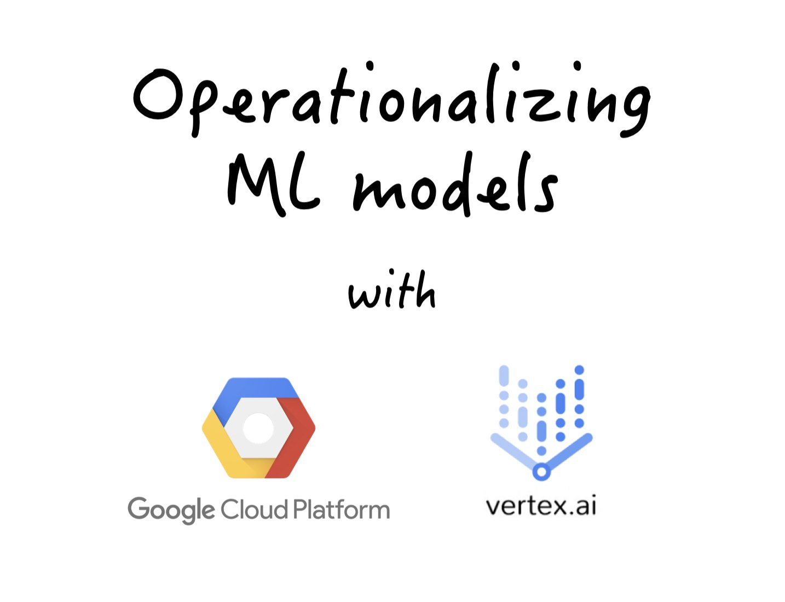

Operationalizing ML Models with GCP Vertex AI
In today's data-driven world, operationalizing machine learning (ML) models efficiently is crucial for organizations aiming to derive actionable insights and drive business decisions. Google Cloud Platform (GCP) offers an advanced suite of tools under Vertex AI that facilitates the implementation of MLOps (Machine Learning Operations), enabling seamless management of the ML lifecycle from data preparation and model training to deployment and monitoring. In this comprehensive guide, we will delve deeper into MLOps, explore the advantages of Vertex AI, and provide a detailed walkthrough on applying MLOps with Google Cloud Platform - Vertex AI.

Understanding MLOps
MLOps encompasses the practices and technologies that streamline and automate the deployment, scaling, monitoring, and management of ML models in production environments. It merges principles from DevOps with ML-specific requirements to ensure repeatability, scalability, and reliability of ML workflows.
Advantages of Vertex AI for MLOps
Unified Platform: Vertex AI provides a unified platform that integrates various stages of the ML lifecycle, including data ingestion, preprocessing, model training, deployment, and monitoring. This integration simplifies workflows and reduces operational complexity.
AutoML Capabilities: Vertex AI includes AutoML capabilities that enable users, including those without deep ML expertise, to build and deploy custom ML models quickly. AutoML features empower domain experts to leverage ML effectively for business use cases.
Scalability and Performance: Leveraging Google's robust infrastructure, Vertex AI offers scalable and high-performance computing resources for model training and serving. This ensures low latency and high availability, critical for real-time ML applications.
Integration with GCP Services: Vertex AI seamlessly integrates with other Google Cloud services such as BigQuery for data analytics, Dataflow for data processing pipelines, and Kubernetes Engine for container orchestration. This integration facilitates end-to-end ML workflows within a cloud-native environment.
Monitoring and Versioning: Vertex AI provides tools for monitoring model performance metrics such as latency, prediction drift, and accuracy. Versioning capabilities enable tracking of model iterations and experiments, ensuring continuous improvement and regulatory compliance.
Applying MLOps with Vertex AI
To illustrate the practical application of MLOps using Vertex AI, let's walk through a detailed example of training, deploying, and monitoring an image classification model using TensorFlow and Vertex AI.
Step-by-Step Implementation
Data Preparation and Model Development:
Develop a TensorFlow model for image classification.
Train the model using labeled data stored in Google Cloud Storage or BigQuery.
# TensorFlow model training example
import tensorflow as tf
from tensorflow.keras import layers, models
# Define and compile your TensorFlow model
model = models.Sequential([
layers.Conv2D(32, (3, 3), activation='relu', input_shape=(28, 28, 1)),
layers.MaxPooling2D((2, 2)),
layers.Flatten(),
layers.Dense(10, activation='softmax')
])
model.compile(optimizer='adam',
loss='sparse_categorical_crossentropy',
metrics=['accuracy'])
# Train the model
mnist = tf.keras.datasets.mnist
(x_train, y_train), (x_test, y_test) = mnist.load_data()
x_train, x_test = x_train / 255.0, x_test / 255.0
model.fit(x_train, y_train, epochs=5)2. Deploy the Model on Vertex AI:
Upload the trained model artifacts to Google Cloud Storage.
Use Vertex AI to create an endpoint and deploy the model for inference.
# Upload model to Google Cloud Storage
gsutil cp -r saved_model/ gs://your-bucket/model/
# Deploy model on Vertex AI
gcloud ai models create my-model \
--artifact-uri=gs://your-bucket/model/ \
--regions=us-central1
gcloud ai endpoints create my-endpoint \
--region=us-central1
gcloud ai endpoints deploy my-endpoint \
--model=my-model \
--region=us-central1 \
--traffic-split=0=1003. Monitor Model Performance:
Enable logging and monitoring for the deployed model using Vertex AI's built-in capabilities.
gcloud beta ai endpoints update my-endpoint \
--region=us-central1 \
--enable-prediction-logging4. Automate MLOps Workflows with CI/CD:
Implement CI/CD pipelines using Google Cloud Build or Kubeflow Pipelines to automate model training, validation, deployment, and monitoring.
# Example Cloud Build YAML file for CI/CD pipeline
steps:
- name: 'gcr.io/cloud-builders/gcloud'
args: ['ai', 'models', 'create', 'my-model', '--region=us-central1', ...]
- name: 'gcr.io/cloud-builders/gcloud'
args: ['ai', 'endpoints', 'create', 'my-endpoint', '--region=us-central1', ...]
- name: 'gcr.io/cloud-builders/gcloud'
args: ['ai', 'endpoints', 'deploy', 'my-endpoint', '--region=us-central1', ...]Conclusion
Google Cloud Platform - Vertex AI empowers organizations to implement robust MLOps practices, enabling efficient deployment, scaling, and management of machine learning models. By leveraging Vertex AI's unified platform, autoML capabilities, scalability, and integration with Google Cloud services, data scientists and ML engineers can accelerate the adoption of AI-driven insights and applications.
Start applying MLOps with Vertex AI today to streamline your ML workflows, enhance model performance, and drive innovation within your organization. Whether you are building custom models, leveraging AutoML, or scaling AI initiatives, Vertex AI provides the tools and infrastructure needed to succeed in deploying production-grade ML models at scale in the cloud.